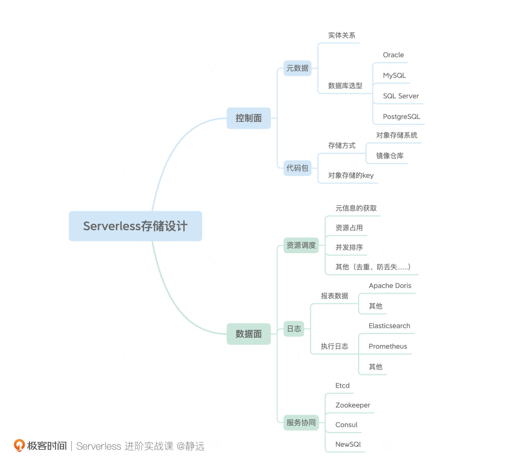

- 00 开篇词 Serverless是降本增效浪潮下的必然选择.md.html
- 00 思维构建 如何在新赛道下进阶Serverless能力？.md.html
- 01 生命周期：函数计算的基本流程是如何执行的？.md.html
- 02 触发器：如何构建事件源与函数计算的纽带？.md.html
- 03 高级属性：应对生产级别的应用，你需要掌握哪些技能？.md.html
- 04 冷启动：如何加快函数的第一次调用过程？.md.html
- 05 扩缩容：如何应对流量的波峰波谷？.md.html
- 06 流量转发：函数在不同情形下是如何执行的？.md.html
- 07 运行时（上）：不同语言形态下的函数在容器中是如何执行的？.md.html
- 08 运行时（下）：不同语言形态下的函数在容器中是如何执行的？.md.html
- 09 小试牛刀（一）：如何利用函数之间的调用解决业务问题？.md.html
- 10 小试牛刀（二）：如何突破VPC网络的速度限制？.md.html
- 11 WebIDE：如何让函数远离繁琐的本地开发模式？.md.html
- 12 编排：如何协调多任务的运行？.md.html
- 13 可观测（上）： 如何构建多维度视角下的Serverless监测体系？.md.html
- 14 可观测（下）： 如何构建多维度视角下的Serverless监测体系？.md.html
- 15 选型：不同阶段的数据应如何存储？.md.html
- 16 动手体验（一）：如何实现业务高效率地开发上线？.md.html
- 17 动手体验（二）：如何在云函数场景下实现一个有状态的服务？.md.html
- 18 实战指南：Serverless沙场老兵的一线使用经验.md.html
- 19 实战进阶（一）：Serverless “连接器” 的能力到底有多大？.md.html
- 20 实战进阶（二）：如何基于智能音箱开发一个BOT技能？.md.html
- 21 实战进阶（三）：传统的服务如何迁移到Serverless平台？.md.html
- 22 私有云：赛马时代的Serverless核心引擎谁能胜出？.md.html
- 23 实战进阶（四）：如何从0到1进阶一个开源引擎？.md.html
- 24 实战进阶（五）：如何从Serverless引擎蜕变成一个Serverless平台？.md.html
- 结束语 在实战中把握事物本质，不断革新.md.html
- 捐赠
15 选型：不同阶段的数据应如何存储？
你好，我是静远。
今天我要与你分享的主题和Serverless平台“存储”设计相关。通常我们在做一个服务或者平台的设计时，存储都是必不可少的一环，比如一些用户数据、日志信息、中间状态等。
在你构建一个生产级FaaS形态的Serverless平台时，也许会遇到这些问题：
- 函数定义该存在哪里？
- 代码包这么大该怎么存？
- 怎么才能保证扩缩容资源的状态被实时感知？
- ……
这节课，我就来和你聊聊Serverless下的数据存储是如何设计的。我将结合上面这些问题，从控制面和数据面两个维度展开，带你了解一个函数计算平台的存储应该考虑哪些方面。
希望通过这节课，你能够对函数计算存储的数据类型，以及针对不同特点数据的存储方案有更深的理解，从而顺利地设计出Serverless平台的存储方案。
整体思路
那么，针对函数计算的形态特征，我们该如何来设计和选型呢？
我通过下面这个思维导图总结了设计一个函数计算平台的核心要点和思路。

其中，控制面由元数据和代码包两个维度组成；从请求的执行过程出发，数据面主要需要考虑元数据在获取时的缓存处理、 函数Pod资源的调度处理、服务之间的协同操作以及日志相关的收集等维度。其中，日志和服务的协同也可以认为是贯穿在整个系统始终的，比如服务协同包括服务的注册与发现、消息的通知与协调、选主等。
控制面的存储
我们先从控制面来看，在创建一个函数时需要准备哪些数据。
元数据
在创建函数之前，首先需要有一个命名空间。虽然大部分函数计算产品都会提供一个默认的命名空间来省略这一步，但在实际的业务上云过程中，都会使用命名空间来管理不同的函数，区分业务，这也属于函数计算中的一部分元信息。
接着，我们再选择创建一个函数。云函数的基本属性就比较多了，除了要考虑控制台上你看到的函数名、函数入口、超时时间、内存大小、运行时类型等常见的函数属性，在实际存储时，我们还需要记录函数的创建时间、更改时间以及函数的唯一标识符。除此之外，当使用灰度发布时，我们还需要考虑函数的版本信息。如果用户绑定了触发器的话，还需要记录触发器的一些基本信息，比如事件源服务、触发规则等。
除了函数本身的附属属性外，平台通常还需要考虑用户相关的信息存储，例如用户ID、权限和并发上限等信息。
我们可以看到，与函数相关的元信息是比较多的，涉及函数、触发器、用户、版本、别名、命名空间等多个实体，其中每个实体又包含众多的属性。
它们之间具有复杂的关联关系，相信你也能猜到，这时，我们需要使用关系型数据库进行存储。它在支持复杂操作和字段更新方面会更灵活，更重要的是，你肯定对关系型数据库并不陌生，几乎每个同学在学校就已经开始接触了。
但估计在数据库的选型上，大部分同学基本上都是靠直觉选择一个自己最熟悉的来做。这里，我跟你分享几个常见数据库的选择。
这是db-engines给出的最新数据库排名，其中前四名都是关系型数据库。
排名第一的Oracle作为数据库的顶级霸主已经霸榜多年，但是价格昂贵且闭源。而我们熟悉的云厂商的云数据库基本上也是围绕MySQL、SQL Server、PostgreSQL来提供云服务能力。所以可以特别关注一下这几个选项。
其中，SQL Server虽然随着新版本的发布和云原生技术的发展，也能在诸如Linux的系统上安装运行，但从互联网发展历程和各大公司系统采用的数据库来看，我更推荐你使用MySQL、PostgreSQL。
MySQL发展至今已经非常成熟，并且社区内也很活跃，其可用性、性能都非常不错。而PostgreSQL是号称世界上最先进的开源关系型数据库，几乎具备MySQL的全部特性，在国外已经非常流行，但在国内的普及率并不如MySQL。
关于它们的比较和使用推荐，你可以参考这篇博文《PostgreSQL vs. MySQL: What you need to know》，文中指出：
Consider PostgreSQL for any application that might grow to enterprise scope, with complex queries and frequent write operations. If you’re new to the world of databases and don’t expect your application to scale up, or you’re looking for a quick tool for prototyping, then consider MySQL.
你不用非要看懂，简单来说，其实就是如果你是刚迈入数据库领域的新手，或者应用程序规模不大，那么MySQL比较合适，否则的话推荐使用PostgreSQL。另外要补充的是，如果你用的是云厂商的RDS数据库，在你选择存储引擎的时候，一定要注意规格和价格，因为适合的才是最好的。
最后，在元数据的存储上，有的Serverless函数计算平台，考虑到以函数为轴心的存储，也会选用类似Mongodb的文档数据库来存储。不过，从CRUD和实体管理的角度来看，我比较推荐你使用关系型数据库来管控元数据。
代码包
接下来，我们来看代码包的存储设计。代码包一般有两种形态，一种是基于云厂商代码框架编写的函数打包成ZIP、WAR、JAR包等形式存在，一种以自定义镜像的形式存在。
- 传统压缩包
针对第一种格式的代码包，相信经过这一段时间对云产品的了解，在你的脑海中立马就能显示出“对象存储”的选择。
通常我们提到对数据的存储，一般会想到文件、块、对象三种不同的方式。它们之间的差别我也在这里列出来了：
考虑到函数计算的特点，资源实例因为是无状态的，所以如果采用分布式文件系统，每次都需要进行挂载操作，非常麻烦。块存储也有同样的问题，并且需要自己实现对块的操作。
而对象存储是支持HTTP访问的，并不需要进行挂载操作，并且KV的特性也会让代码包路径具有很高的可读性，虽然在表格上也提到了对象存储是无法直接对对象内容进行修改的，但是对于函数代码包而言，通常都是读多写少，因此，对象存储非常适合用来保存用户的代码。
另外，因为对象存储是通过键值对的方式保存每一个对象的，所以，为每一个函数代码包设计一个Key的生成规则就显得尤为重要了。
比如，可以将用户信息与代码信息关联：
userId/hash(codeFile)
这样，在上传代码包时，你只需要将函数代码包的key作为函数的一个属性存入数据库，然后再单独将代码包根据key存入对象存储服务中就可以了。而在代码发生变更时，因为代码包和哈希编码也会改变，因此需要做到和数据库的元信息同步。
在启动函数实例时，再通过对象存储的API根据key值将代码包下载下来，这样就完成了代码包的获取。
- 自定义镜像
讲到“镜像”，我们很容易对应上“镜像仓库”的概念。是的，我们设计一个平台或者一个系统的时候，尽可能地依托一些现有的基础服务，是进一步加快和加固我们服务构建的关键因素。
其实不止是函数代码的自定义镜像文件，函数计算平台本身的服务也会以镜像的形式存在，这些都可以存储在镜像仓库中。
那么，选择一个合适的容器镜像服务就是非常有必要的。并且在你创建镜像仓库的时候也要记得选择私有的限制以确保安全性。目前云厂商提供的容器镜像服务不光支持镜像仓库的托管，通常还会支持像镜像安全扫描以及多地域镜像加速等高级能力。
国内主流的公有云厂商都有相关的容器镜像服务，像阿里云的ACR、腾讯云的TCR、华为云SWR以及百度云的CCR目前都做得比较成熟了，你可以综合价格、使用地域等多方面来进行选择。
数据面的存储
接下来，我们来看看数据面的存储设计和访问。在第六节课中，我跟你讲到了流量进来后的调度过程，这里，我们可以提取出来几个和数据获取相关的要点。
- 元信息的获取：生产级别的函数计算平台通常会将控制面的数据管控能力和调度能力进行架构拆分，那么，流量的调度服务就需要通过一个微服务（如APIServer）来获取函数信息。这里为了提高并发和性能，我们可以考虑通过缓存的方式来保存不经常变更的元数据；
- 资源的占用：我们知道，冷启动实际上是占用一个Cold Pod的调度过程，由于生产级别的资源控制模块通常采用分布式方式部署，如果两个资源控制模块分别根据不同的请求去占用同一个Cold Pod，那么到底是谁获取这个Pod呢？又如何保证不会被重复获取呢？这就涉及到锁定的问题。
- 并发排序：函数的实例Pod是可以支持多个并发操作的，这种情况下，我们如何均衡调度呢？比如如何知道哪个Pod调度的并发多，哪个目前处理处于空闲？这就涉及到排序和调度的问题。
除此之外，在异步场景下，还要看重复、丢失等问题。我们会发现，这些问题其实都可以通过分布式缓存中间件来解决，比如Redis。它可以解决掉上述的性能与并发问题，资源加锁的问题，以及排序、去重等问题。
我们看一个跟函数场景比较相关的Pod排序问题。你可以通过Redis的ZSET数据结构，用key记录函数唯一标识，用member记录关联该函数的warm pod， 用score记录当前warm pod 的并发情况。
key:函数唯一标识
member:pod的ip
score:并发度
这样我们就可以将函数、资源与请求三者关联起来。当出现多个资源控制模块占用同一资源时，抢到Cold Pod的会先将这个Pod根据key写入对应的ZSET中，这样，其他资源控制模块就无法占用了。而score 因为记录了Pod的当前并发，我们也可以根据score的数值来判断Pod并发的程度以及是否空闲。
这些都可以通过Redis这样的缓存中间件来完成，缓存中间件中的数据也可以预加载，我们在Console操作的时候，就可以提前加载到Redis中。
接下来，我们再来看贯穿系统运行始终的数据：日志和服务状态。
日志
日志对你来说应该已经非常熟悉了。在函数计算中，比较重要的是执行阶段产生的运行日志如何设计和存储。这关系到整个系统问题的排查，链路追踪的可观测能力，以及报表统计等能力。
关于可观测的部分，我们在上一节已经详细介绍了。这里，我们来说一下如何利用日志生成平台的报表数据，比如平台一天的调用量、某个函数一天消耗的资源量等等。
报表虽然是源于日志的采集和汇聚，但和日志本身的存储还是有明显区别的：
- 报表数据只需要一些关键指标，比如函数的调用次数、资源的使用以及调用时间等，而像一些辅助节点的日志信息，其实我们并不关心；
- 报表数据的存储时间比较长，执行日志有可能只需要保存1-2周或者1个月，一般都会定期清理日志，而报表和营收挂钩，通常保存时间都是以年为单位。
针对报表的存储，这里我推荐使用Apache Doris，它最早是解决百度凤巢统计报表的专用系统，经过多轮迭代构建成基于MPP 架构的云数据仓库，并开源贡献给了Apache基金。所以，从技术沉淀、业务打磨上来说Doris绝对是你的首选。
Doris不仅兼容 MySQL 协议，并且使用标准 SQL，只是这个特点，就足以让你快速介入了。另外，它的导入和周边生态也非常丰富，比如我们日志数据清洗时用到的Logstash，就可以作为Doris的输入，这样我们的报表就可以通过Logstash筛选出关键的信息，保存到Doris中。
当然，你也可以根据所在团队的历史或者业务的基础设施情况，选择ClickHouse、GreenPlum、或者自研引擎的OLAP数据库。由于底层存储系统的复杂性和运维难度，选择一个运维团队合适的存储底座或者云厂商的一个数据库产品，也是一种不错的方案。
服务状态
另外，在函数执行过程中涉及到的服务还需要考虑到高可用的部署，这时候，服务状态也需要记录下来。
比如像离线的扩缩容模块，往往会采用主备的方式进行部署，这就涉及到了选主问题。另外像一些服务可能还需要横向扩容，则需要用到服务注册与发现的能力。
这一类问题最常见的解决方案就是使用一个可以同步服务状态的注册中心，来处理不同服务模块的选主、通知、协调以及消息发布等问题。
在云原生时代的今天，我推荐你使用Etcd。它天生具有分布式协同源语（如事件Watch、租约、选举和分布式共享锁等），对自己的定位也是云计算的基础设施。很多上层系统，如Kubernetes、CloudFoundry、Mesos都使用了Etcd。同时，Google、阿里巴巴等多个大型互联网公司也都在广泛使用，可以称得上是大中型集群管理系统的重要解决方案。
关于Etcd的技术和特性比较，官网也给出了具体与ZooKeeper、Consul、NewSQL的对比，重点从并发原语、线性读、多并发版本控制等10个维度来对比。
简单来说，Etcd和Zookeeper解决了相同的问题，也就是分布式系统的协同和元数据的存储，至于它们两者的差异，是设计理念的不同造成的。Etcd相对ZooKeeper“更年轻更轻量”，它针对ZooKeeper进行了一些如租约、MVCC等方面的改进。出于稳定性、新特性上的考虑，如果是新的应用，我更推荐你用Etcd。
Consul的优势在于服务发现，它提供内置的健康检查、故障检测和DNS服务。它和Etcd解决的问题侧重点不一样，如果是为了解决分布式系统一致性key-value存储的话，我那么推荐使用Etcd，但如果是端到端的服务发现，那么Consul要更好一些。
NewSQL更适合于存储GB级别的数据或者需要完整SQL查询能力的场景。
小结
最后，我来小结一下我们今天的内容。这节课我从控制面和数据面两个维度给你介绍了FaaS形态Serverless平台的存储设计思路和资源选型。
我们从中了解了不同的数据实体和运行阶段选型的一些方法和思考。我们需要从数据的特性、企业的基础设施、开发人员的熟悉成本、业务的量级等角度来做一个合理的选择，而不是单单从存储资源的技术指标上来衡量。
正如我们在日志的存储环节中跟你提到的那样，如果我们自己运维Doris的成本比较大，那“借力打力”，选择原本团队就在使用的数据库系统，是不是也可以呢？做平台也好，做业务也好，ROI也是我们要考虑的因素。
今天我们谈到的控制面的关系型数据库，如果从另一个角度出发，以函数为Key存储是不是也可以？是的，选择类似一个KV的存储也可以，就看架构师怎么衡量系统实现的复杂度和便利性，这种衡量依赖于业务和系统发展的阶段不同而变化。
所以，今天提到的MySQL、PostgreSQL、Redis、Doris、Etcd等，都是我们思考的一个具象化的表达而已。我们更关心的，应该是构建一个系统的思维。
课后作业
好了，这节课到这里也就结束了，最后我给你留了一个小作业。
根据本节课的了解，你可以想一想如果让你设计一个Serverless平台，还有哪些数据在本文中没提到，你打算如何存储？
欢迎在留言区写下你的思考和答案，我们一起交流讨论。感谢你的阅读，也欢迎你把这节课分享给更多的朋友一起交流学习。
延伸阅读
（Etcd，Concurrency Primitives）：链接1，链接2，链接3，链接4，链接5
（ZooKeeper，Concurrency Primitives）：链接6
（Consul，Concurrency Primitives）：链接7
（NewSQL，Concurrency Primitives）：链接8
（Etcd，Linearizable Reads）：链接9
（Consul，Linearizable Reads）：链接10
（Etcd，Multi-version Concurrency Control）：链接11
（Etcd，Transactions）：链接12
（ZooKeeper，Transactions）：链接13
（Consul，Transactions）：链接14
（Etcd，Change Notification）：链接15
（ZooKeeper，Change Notification）：链接16
（Consul，Change Notification）：链接17
（Etcd，User permissions）：链接18
（ZooKeeper，User permissions）：链接19
（Consul，User permissions）：链接20
（NewSQL，User permissions）：链接21、链接22
（Etcd，HTTP/JSON API）：链接23
（Consul，HTTP/JSON API）：链接24
（Etcd，Membership Reconfiguration）：链接25
（ZooKeeper，Membership Reconfiguration）：链接26
（Consul，Membership Reconfiguration）：链接27
© 2019 - 2023 Liangliang Lee. Powered by gin and hexo-theme-book.